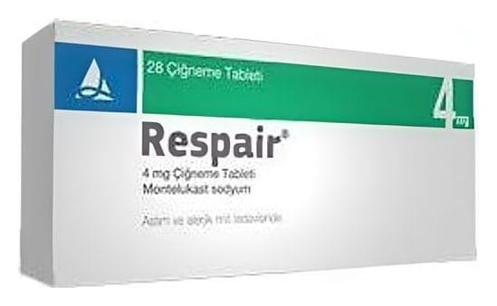

Respair 4 mg 28 Çiğneme Tablet

Ne için kullanılır
KT · Bölüm 1• RESPAİR®, etkin madde olarak montelukast sodyum içerir. Bu etkin madde, lökotrien olarak bilinen maddelerin vücutta işlev görmesini engelleyerek solunum yolları ve akciğerdeki daralma ve şişkinliği önler. • RESPAİR®, 28 ve 84 tabletlik blister ambalajlarda sunulur. Benekli pembe renkli, oval, düz tabletlerdir. • RESPAİR®4 mg Çiğneme Tableti, 2 ve 5 yaş arası çocuklarda, • Astım hastalığının önlenmesinde ve sürekli tedavisinde, • Saman nezlesi ya da sürekli alerjik burun iltihabına bağlı şikayetlerin giderilmesinde kullanılmaktadır.